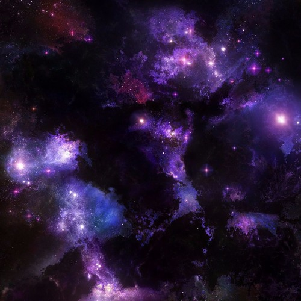
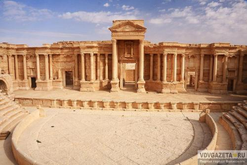

Косми́ческое простра́нство, ко́смос (др.-греч. κόσμος — «упорядоченность», «порядок») — относительно пустые участки Вселенной, которые лежат вне границ атмосфер небесных тел. Космос не является абсолютно пустым пространством: в нём есть, хотя и с очень низкой плотностью, межзвёздное вещество (преимущественно молекулы водорода), кислород в малых количествах (остаток после взрыва звезды), космические лучи и электромагнитное излучение, а также гипотетическая тёмная материя.
Чёткой границы не существует, атмосфера разрежается постепенно по мере удаления от земной поверхности, и до сих пор нет единого мнения, что считать фактором начала космоса. Если бы температура была постоянной, то давление бы изменялось по экспоненциальному закону от 100 кПа на уровне моря до нуля. Международная авиационная федерация в качестве рабочей границы между атмосферой и космосом установила высоту в 100 км (линия Кармана), потому что на этой высоте для создания подъёмной аэродинамической силы необходимо, чтобы летательный аппарат двигался с первой космической скоростью, из-за чего теряется смысл авиаполёта[2][3][4][5].
Астрономы из США и Канады измерили границу влияния атмосферных ветров и начала воздействия космических частиц. Она оказалась на высоте 118 километров, хотя само NASA считает границей космоса 122 км. На такой высоте шаттлы переключались с обычного маневрирования с использованием только ракетных двигателей на аэродинамическое с «опорой» на атмосферу[3][4].
Дре́вний Рим — одна из цивилизаций Древнего мира, государство Античности, получила своё название по главному городу (Roma — Рим), в свою очередь названному в честь легендарного основателя — Ромула. Центр Рима сложился в пределах болотистой равнины, ограниченной Капитолием, Палатином и Квириналом. Определённое влияние на становление древнеримской цивилизации оказали культуры этрусков и древних греков. Пика своего могущества Древний Рим достиг во II веке н. э., когда под его контролем оказалось пространство от современной Англии на севере до Судана на юге и от Ирака на востоке до Португалии на западе.
Официальным языком древнеримского государства был латинский. Неофициальным гербом империи был Золотой орёл (aquila), после принятия христианства появились лабарумы (знамя, установленное императором Константином для своих войск) с хризмой (монограмма Иисуса Христа — скрещённые буквы Хи и Ро). Религия в Древнем Риме в течение большей части периода существования была политеистична. Христианство как религия зародилось на территории оккупированной Римской империей Палестины.
Современному миру Древний Рим подарил римское право, некоторые архитектурные формы и решения (например, арку и купол) и множество других новшеств (например, колёсные водяные мельницы).
Древнеримская мифология во многих аспектах близка греческой, вплоть до прямого заимствования отдельных мифов. Однако в религиозной практике римлян большую роль играли также анимистические суеверия, связанные с почитанием духов: гениев, пенатов, ларов, лемуров и манов. Также в Древнем Риме существовали многочисленные коллегии жрецов.
Хотя религия играла значительную роль в традиционном древнеримском обществе, ко II веку до н. э. значительная часть римской верхушки уже относилась к религии индифферентно. В I веке до н. э. римские философы (прежде всего Тит Лукреций Кар и Марк Туллий Цицерон) в значительной степени пересматривают или подвергают сомнению многие из традиционных религиозных положений.
На рубеже н. э. Октавиан Август принял меры по установлению официального культа империи.
В первой половине I в. в провинции Иудея Римской империи возникло христианство, приверженцами которого стали затем и представители других народов империи. Сначала оно вызывало лишь подозрение и неприязненное отношение со стороны имперских властей, в середине III в. оно было запрещено, начались преследования христиан по всей Римской империи. Однако уже в 313 г. император Константин издал Миланский эдикт, которым разрешил христианам свободно исповедовать свою религию, строить храмы, занимать общественные должности. Христианство затем постепенно превратилось в государственную религию. Во второй половине IV в. начался разгром языческих храмов, были запрещены Олимпийские игры.